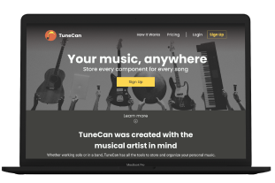
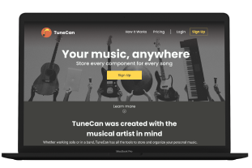

TuneCan
Your Components Anywhere
Whether on tour or at home, TuneCan makes it possible for musical artists to store their song components for easy editing.
Whether on tour or at home, TuneCan makes it possible for musical artists to store their song components for easy editing.
Musical artists and producers constantly save song components for use in songs. These components can be as small as a hit on a drum, to complete guitar solo’s. Musicians need to spend more time perfecting their song and less time trying to find the correct components. Whether playing in a garage or selling out stadiums, TuneCan was created to help all song creators improve their workflows.
Song Creation is an extremely complex process that typically has many people involved. Artists and producers record multiple versions of drum tracks, guitar solos, vocals and more. They even record random sounds they feel may fit the vibe of a particular song. Artists and producers needed a way to save and organize their components for easy use down the road. Life on the road is hard and stressful; however, making music should not be.
TuneCan is a cloud storage application that provides the necessary tools to artists and producers to store and organize their song components. The goal is to provide a platform in which song components can be uploaded and organized by band, album, songs, and then down to the specific instrument. Each user can have multiple bands and songs for any projects they desire to pursue.


I began with a user survey that was sent out by email. I had over 20 responses and the following results were gathered:
- 94.4% of participants used cloud storage to upload content
- 53.6% said collaboration was “Important”
- 72.2% said content organization was “Very Important”
- 83.3% said they use both the computer and mobile to access their storage
-100% said they platform of choice was a “Desktop Computer”


To get an idea of what some similar applications were doing well and not so well, I did a SWOT analysis on three storage applications. These include Evernote, Flickr, and Dropbox. Knowing what similar companies were doing helped shape the scope of this project and provided a great base to begin finding the path forward for TuneCan.
Three user personas were created to define the scope of this project. Due to TuneCan being an application based on musicals artists and producers there were only three distinct users.


User Flows were created for the most important processes discovered during the research phase. These included uploading content, sharing content, organizational methods, and collaboration.


The last step before beginning wireframing was to create a site map. Due to the nature of cloud storage applications, things can get confusing. The site map was a nice way to stay in the right direction when creating the mockups.

Once the application felt like it was coming alive, branding became a massive part of the final solution. Unfortunately, people judge books by their cover which is why TuneCan had to appeal to all musicians. It had to look modern, simple and stylish.
Multiple mood boards were created to get different ideas of what TuneCan could be. After many hours of contemplation a more serious, dark look was chosen. I did this for multiple reasons. One, musical artists and producers spend hours behind a computer screen when not recording. This is to mix, edit, and rearrange their musical pieces. I did not want to cause eye strain during these long hours. Lastly, this application is meant to help improve the workflow of artists. This is a professional application, and I wanted it to look that way.
A fun, yet professional color palette was chosen. I wanted to give the feeling of creativity while also coming off as a brand that should be taken seriously. The bright yet give the sense enthusiasm and happiness, while the darker colors give it the sense of elegance.

Brand Typeface - Poppins
Complimentary Typeface - Muli
These typefaces were used because they look fun, are easy to read, and truly express the voice of TuneCan.
I started with some basic sketches to determine the route I wanted to take. Out of the few pages of sketches I felt that the toucan with the quarter note best fit the feeling of TuneCan.
With the drawing picked out I went ahead and created it in Adobe Illustrator. The first round of the design was a great place to start but more work needed to be done. From the initial design, I was able to refine my logo by adding a heavier stroke, and adding some nice colors to compliment the brand.


To make the logo appealing to the eye,I decided to create this logo using the fibonacci sequence. I was able to create perfect curves that are all in proportion to one another and used the shape builder tool to merge and dissect the pieces I did not want. Lastly, I had to increase the stroke on the final design. The stroke was too thin and looked off compared to the size of the body of the toucan.
This logo represents the brand in many ways. The body of the Toucan is in the shape of a quarter note and the Toucan in general looks fun and inviting. In addition, it is easily recognizable which will help increase brand recognition.
Once branding was complete it was finally time to create some mockups. I started by drawing out some basic sketches of what I thought the layout would look like.

With these sketches I was able to create a working prototype using Figma and InVision. These screens were very basic and contained general information.


User testing was extremely helpful in coming to the final design of TuneCan. Users were asked what they thought the website was for, to create an account, organize content, share content, and sign out. From these rounds of testing a few things were brought to my attention:
1) My content strategy needed work. The site was too vague and it left users feeling confused.
2) The uploading of song components needed work. Users were getting confused uploading their content to the application.
3) Potential issues with selecting more than one song file at once.
This feedback was helpful and used to create the high fidelity mockups.
With the feedback from the initial round of testing, the high fidelity mockups were made. Although the feel of the site did not change, certain components and user flows were updated for better performance. I did a complete overhaul of the content strategy. Users were getting confused of the sites purpose and I really tried to articulate the purpose of the site this time around. I reworked the song selection, and content uploading by using contextual UX.


In between the creation of high fidelity mockups and more user tests I performed some preference testing on screens. I tested to see how people responded to shape changes, where a search bar should go on mobile, and if modal windows were effective in the design.


As in the initial mockups, users were tasked with completing specific tasks while thinking out loud. This round went much better than the original. Each user tested found errors in my design that I was able to fix prior to the next round of testing. This ranged from simple grammatical issues, to issues where content was only able to be uploaded from the main screen. These final rounds of user testing truly helped make TuneCan a solid product.
This was a very hard project to begin. The brief was extremely vague and did not give a lot of direction. This made it difficult to find where to begin. The cloud storage survey helped narrow down what people were looking for and the competitive analysis made gain an understanding of how to enter the market.
Every step of the process helped shape the final design of TuneCan. User testing proved to be the most important step in my opinion. Towards the end I was so familiar with the application that I lost sight of what a new user would be seeing. User tests really helped me snap back into reality and realize some major improvements needed to be made.
If given more time to polish up TuneCan, I would go back and work on how users organize their content. This popped up in both rounds of user testing. Although less people got tripped up than in the first round, it is clear the design could be improved.
Although TuneCan is complete, there are improvements that could be made if I had more time. Like any other application, TuneCan could go through many more rounds of user testing to really polish it up.
Reflecting back to the survey in the beginning of the project, the users clearly stated what was important to them in a cloud storage application.
TuneCan has successfully provided solutions to all the user needs to compete with other cloud storage applications. Users can create bands, albums, and songs for collaboration or solo work. Users can upload their song components into those songs and organize them as they deem fit. TuneCan is an all in one package for any musical artist or producer and should be an essential part of any professional workflow.
As Steven Tyler from Aerosmith once said, “We believed that anything that was worth doing was worth overdoing,” and I hope musical artists will use this platform to do just that.